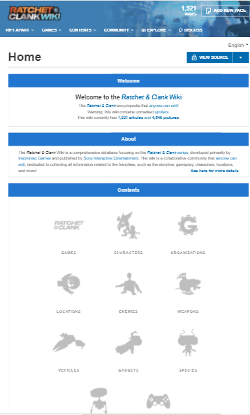
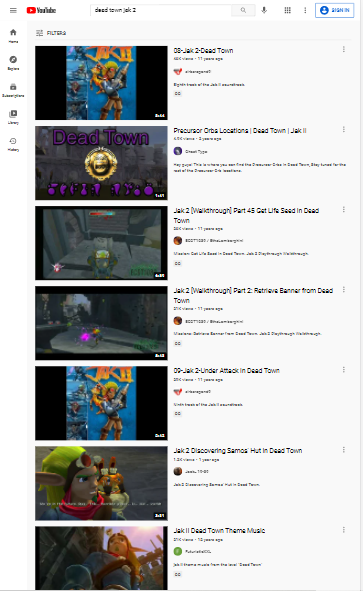

Repetition
Ratchet and Clank Wiki When a page gives an understanding flow between its elements. Designs that repeats similar presentation, be it in font, headings, banners, picture placement. Has Navigation easy and gives variety of search priorities.
Contrast
Pluto TV websiteThe color maters on this page. Color gives a presentation of importance and also has it readable. utilizes a color ratio, that depends on each color, but usually white and black letters go with most colors. enhances hiearchy of elements as well.
Alignment
Youtube.com search for Jak 2 music Contains page's elements in order, and organized to show relevence, like a search query. Positioning shares equal presentation. Not only looks good to see and easy to read. It has it effecient to share with a fast and to the point view